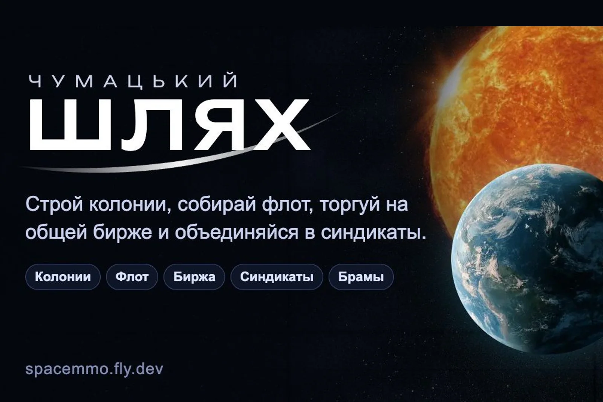

Працює

Космічний симулятор
5/5
Чумацький Шлях
серверний тік · PostgreSQL · 65 модулів сервера · 12 офлайн-наборів тестів
Мультиплеерна економічна стратегія: колонії, енергобаланс, флот, синдикати й мережа Брам. Спільна біржа має резерв хаба, який стримує крайні ціни; усі розрахунки — на сервері.
Тік раз на секунду: світ живе, поки гравець офлайн
Спільна біржа й резерв хаба з обмеженим фондом викупу
Боти під керуванням мовної моделі